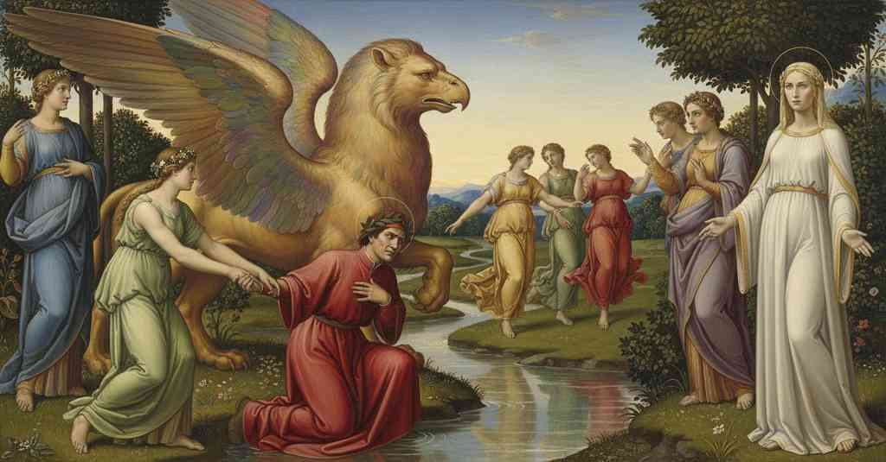

Purgatorio — Canto 31

Dante, spinto alla confessione da Beatrice, viene immerso da Matelda nel Lete per purificarsi, poi condotto dalle virtù fissa gli occhi di Beatrice, dove contempla il Grifone prima che lei sveli il suo sorriso. Dante, prompted to confession by Beatrice, is immersed in the Lethe by Matelda to be purified, then led by the virtues he gazes into Beatrice's eyes, where he contemplates the Griffin before she unveils her smile. ベアトリーチェに促されて罪を告白したダンテは、マテルダによってレテ川に浸されて浄められ、徳に導かれてベアトリーチェの瞳を凝視し、彼女が微笑みを現す前にその中にグリフォンを観想する。
1
«O tu che se’ di là dal fiume sacro»,
«O you who are beyond the sacred river»,
「おお、聖なる川の向こうにいるそなたよ」
2
volgendo suo parlare a me per punta,
turning her speech to me with its point,
その言葉の切っ先を私に向け、
3
che pur per taglio m’era paruto acro,
which even with its edge had seemed harsh to me,
刃でさえ私には辛辣に思えたのだが、
4
ricominciò, seguendo sanza cunta,
she began again, continuing without pause,
間髪入れずに再び語り始めた、
5
«dì, dì se questo è vero: a tanta accusa
«say, say if this is true: to so great an accusation
「言え、言え、これが真実かと。かくも大いなる告発には
6
tua confession conviene esser congiunta».
your confession must be joined».
そなたの告白が結び付けられねばならぬ」と。
7
Era la mia virtù tanto confusa,
My faculty was so confused,
私の気力はあまりに混乱し、
8
che la voce si mosse, e pria si spense
that my voice moved, and died out before
声は動いたものの、先に消え失せた、
9
che da li organi suoi fosse dischiusa.
it could be freed from its own organs.
声の器官から解き放たれる前に。
10
Poco sofferse; poi disse: «Che pense?
She waited little; then said: «What are you thinking?
彼女は少し待っただけだった。そして言った。「何を考えている？
11
Rispondi a me; ché le memorie triste
Answer me; for the sad memories
私に答えよ。悲しき記憶は
12
in te non sono ancor da l’acqua offense».
in you are not yet struck by the water».
そなたの中で、まだ水に消されてはおらぬのだから」
13
Confusione e paura insieme miste
Confusion and fear mixed together
混乱と恐怖が共に混じり合い
14
mi pinsero un tal «sì» fuor de la bocca,
pushed such a «yes» from my mouth,
私の口からある「はい」という言葉を押し出した、
15
al quale intender fuor mestier le viste.
that to understand it sight was required.
それを理解するには視覚が必要なほどのかすかな。
16
Come balestro frange, quando scocca
As a crossbow breaks, when it shoots
石弓が、引き絞りすぎた張力から
17
da troppa tesa, la sua corda e l’arco,
from too much tension, its string and bow,
弦と弓を放つ時に砕け、
18
e con men foga l’asta il segno tocca,
and with less force the shaft hits the mark,
矢が勢いを失って的を打つように、
19
sì scoppia’ io sottesso grave carco,
so I burst beneath that heavy burden,
私もその重荷の下で破裂し、
20
fuori sgorgando lagrime e sospiri,
gushing forth tears and sighs,
涙と溜息を外へほとばしらせ、
21
e la voce allentò per lo suo varco.
and my voice slackened through its passage.
声はその通り道で力を失った。
22
Ond’ ella a me: «Per entro i mie’ disiri,
Whereupon she to me: «Within my desires,
すると彼女は私に言った。「私の願いの中にあり、
23
che ti menavano ad amar lo bene
which led you to love the good
そなたを善なるものを愛するよう導いていた、
24
di là dal qual non è a che s’aspiri,
beyond which there is nothing to aspire to,
それの彼方には望むべきもののない善を、
25
quai fossi attraversati o quai catene
what transverse ditches or what chains
どのような横たわる堀を、あるいはどのような鎖を
26
trovasti, per che del passare innanzi
did you find, that of passing onward
そなたは見出したのか、そのために前へ進むという
27
dovessiti così spogliar la spene?
you should have to strip yourself of hope?
希望をかくも脱ぎ捨てねばならなかったのか？
28
E quali agevolezze o quali avanzi
And what comforts or what advantages
そしてどのような安楽さが、あるいはどのような利点が
29
ne la fronte de li altri si mostraro,
showed themselves on the brow of the others,
他のものの額に現れたのか、
30
per che dovessi lor passeggiare anzi?».
that you had to walk before them instead?».
そのためにそなたはむしろそれらの後を歩まねばならなかったのか？」と。
31
Dopo la tratta d’un sospiro amaro,
After the drawing of a bitter sigh,
苦い溜息を一つ吐いた後、
32
a pena ebbi la voce che rispuose,
I barely had the voice to answer,
私にはかろうじて答える声があり、
33
e le labbra a fatica la formaro.
and my lips formed it with difficulty.
唇が苦労してそれを形作った。
34
Piangendo dissi: «Le presenti cose
Weeping I said: «The present things
泣きながら私は言った。「現世の物事が
35
col falso lor piacer volser miei passi,
with their false pleasure turned my steps,
その偽りの快楽をもって、私の歩みを転じさせました、
36
tosto che ’l vostro viso si nascose».
as soon as your face was hidden».
あなた様のお顔が隠されてすぐに」と。
37
Ed ella: «Se tacessi o se negassi
And she: “If you were silent or if you denied
すると彼女は言った、「たとえあなたが黙ろうと、あるいは否定しようと
38
ciò che confessi, non fora men nota
what you confess, no less known would be
あなたが告白したことを、あなたの罪が知られぬことはなかったでしょう。
39
la colpa tua: da tal giudice sassi!
your fault: by such a judge it is known!
そのような審判者には、すべて見抜かれているのですから！
40
Ma quando scoppia de la propria gota
But when from one’s own cheek there bursts
しかし、自らの口からほとばしり出るとき
41
l’accusa del peccato, in nostra corte
the accusation of the sin, in our court
罪の告発が、我らが法廷においては、
42
rivolge sé contra ’l taglio la rota.
the wheel turns itself against the cutting edge.
車輪は刃の切れ味に逆らって自らを回すのです。
43
Tuttavia, perché mo vergogna porte
Nevertheless, so that you now may bear shame
とはいえ、今あなたがその過ちを恥じているがゆえに、
44
del tuo errore, e perché altra volta,
for your error, and so that another time,
そして、またの機会に、
45
udendo le serene, sie più forte,
hearing the Sirens, you may be stronger,
セイレーンの声を聞いても、より強くいられるように、
46
pon giù il seme del piangere e ascolta:
put down the seed of weeping and listen:
泣くことの種を蒔くのはやめて、聞きなさい。
47
sì udirai come in contraria parte
so you shall hear how in a contrary direction
そうすれば、いかに逆の方向へと
48
mover dovieti mia carne sepolta.
my buried flesh should have moved you.
私の葬られた肉体があなたを動かすべきだったかを聞くでしょう。
49
Mai non t’appresentò natura o arte
Never did nature or art present to you
自然も技も、あなたに示したことはなかった
50
piacer, quanto le belle membra in ch’io
a pleasure, so much as the beautiful limbs in which I
私がその中に閉じ込められていた美しい肢体ほどの
51
rinchiusa fui, e che so’ ’n terra sparte;
was enclosed, and which are scattered in the earth;
喜びを。そしてその肢体は今や地に散らばっているのです。
52
e se ’l sommo piacer sì ti fallio
and if the highest pleasure thus failed you
そして、もしその至高の喜びが、
53
per la mia morte, qual cosa mortale
through my death, what mortal thing
私の死によってあなたから失われたのなら、いかなる死すべきものが
54
dovea poi trarre te nel suo disio?
ought then to have drawn you to its desire?
その後あなたをその欲望へと引きずり込むべきだったでしょう？
55
Ben ti dovevi, per lo primo strale
Indeed you should have, at the first arrow
まことにあなたは、偽りの物事の
56
de le cose fallaci, levar suso
of deceitful things, risen up
最初の矢によって、身を起こし、
57
di retro a me che non era più tale.
behind me who was no longer such a thing.
もはやそのような者ではなくなった私の後に続くべきだったのです。
58
Non ti dovea gravar le penne in giuso,
It should not have weighed your feathers downward,
あなたの翼を下に重くさせるべきではなかった、
59
ad aspettar più colpo, o pargoletta
to await more blows, or a little girl
さらなる一撃を待つために。小娘や、
60
o altra novità con sì breve uso.
or other novelty of such brief use.
あるいは束の間の他の目新しさからの。
61
Novo augelletto due o tre aspetta;
A new little bird awaits two or three;
若鳥は二度三度と待つでしょうが、
62
ma dinanzi da li occhi d’i pennuti
but before the eyes of the feathered ones
しかし、羽を持つ者たちの目の前では
63
rete si spiega indarno o si saetta».
a net is spread in vain or an arrow is shot.”
網を張るのも矢を射るのも無駄なのです」。
64
Quali fanciulli, vergognando, muti
As children, ashamed, stand mute
恥じらい、黙りこくった子供たちが、
65
con li occhi a terra stannosi, ascoltando
with their eyes to the ground, listening
地に目を落として立ち、聞きながら、
66
e sé riconoscendo e ripentuti,
and recognizing themselves and repentant,
自らを認め、悔い改めるように、
67
tal mi stav’ io; ed ella disse: «Quando
so I stood; and she said: “Since
そのように私は立っていた。すると彼女は言った、「聞くことで
68
per udir se’ dolente, alza la barba,
you are grieving from hearing, raise your beard,
あなたが苦しいのであれば、その髭を上げなさい、
69
e prenderai più doglia riguardando».
and you will take more grief from looking.”
見ることによって、より大きな苦しみを得るでしょう」。
70
Con men di resistenza si dibarba
With less resistance is a robust oak
より少ない抵抗で根こそぎにされるだろう
71
robusto cerro, o vero al nostral vento
uprooted, either by our northern wind
頑丈な樫の木が、我らが国の風か、
72
o vero a quel de la terra di Iarba,
or by that from the land of Iarbas,
あるいはイアルバの地の風によっても、
73
ch’io non levai al suo comando il mento;
than I lifted my chin at her command;
私が彼女の命令に顎を上げたよりも。
74
e quando per la barba il viso chiese,
and when by ‘the beard’ she asked for my face,
そして、彼女が髭によって顔を求めた時、
75
ben conobbi il velen de l’argomento.
I well knew the venom of her argument.
私はその論の毒をよく理解した。
76
E come la mia faccia si distese,
And as my face was raised,
そして私の顔がまっすぐになると、
77
posarsi quelle prime creature
my eye perceived that those first creatures
かの最初の生き物たちが
78
da loro aspersïon l’occhio comprese;
had paused from their scattering;
花を撒くのをやめたのを、目は捉えた。
79
e le mie luci, ancor poco sicure,
and my lights, still little sure,
そして私の光（目）は、まだおぼつかなかったが、
80
vider Beatrice volta in su la fiera
saw Beatrice turned toward the beast
ベアトリーチェがかの獣の方を向いているのを見た、
81
ch’è sola una persona in due nature.
that is one single person in two natures.
二つの本性においてただ一人のペルソナである獣を。
82
Sotto ’l suo velo e oltre la rivera
Under her veil and beyond the river
そのヴェールの下、そして川の向こうで
83
vincer pariemi più sé stessa antica,
she seemed to me to surpass her former self more,
彼女はかつての自身をより超えているように見えた、
84
vincer che l’altre qui, quand’ ella c’era.
to surpass how she surpassed others here, when she was.
彼女がここにいた時、他の者たちを超えていた以上に。
85
Di penter sì mi punse ivi l’ortica,
The nettle of repentance so stung me there,
そこで悔悟の蕁麻が私を刺し、
86
che di tutte altre cose qual mi torse
that of all other things whichever had turned me
他のすべての物事の中で、私をその愛へと
87
più nel suo amor, più mi si fé nemica.
most to its love, became most my enemy.
最も引き寄せたものが、最も憎むべきものとなった。
88
Tanta riconoscenza il cor mi morse,
Such recognition bit my heart,
それほどの自己認識が心を噛み、
89
ch’io caddi vinto; e quale allora femmi,
that I fell vanquished; and what I then became,
私は打ち負かされて倒れた。そしてその時私がどうなったか、
90
salsi colei che la cagion mi porse.
she knows who was the cause of it.
その原因を与えた彼女が知っている。
91
Poi, quando il cor virtù di fuor rendemmi,
Then, when my heart restored my outward strength,
やがて、心が外への力を私に取り戻した時、
92
la donna ch’io avea trovata sola
the lady whom I had found alone
私が一人で見つけたあの貴婦人が
93
sopra me vidi, e dicea: «Tiemmi, tiemmi!».
I saw above me, and she said: “Hold me, hold me!”
私の上にいるのが見え、彼女は言った。「私を掴んで、掴んで！」
94
Tratto m’avea nel fiume infin la gola,
She had drawn me into the river up to the throat,
彼女は私を喉まで川の中へと引き入れていた、
95
e tirandosi me dietro sen giva
and pulling me behind her she went
そして私を後ろに従えながら進んでいった
96
sovresso l’acqua lieve come scola.
over the water as light as a shuttle.
杼のように軽やかに水の上を。
97
Quando fui presso a la beata riva,
When I was near the blessed shore,
私が祝福された岸辺に近づいた時、
98
‘Asperges me’ sì dolcemente udissi,
‘Asperges me’ so sweetly I heard,
「我に振りそそぎ給え」と、あまりに甘美に聞こえたので、
99
che nol so rimembrar, non ch’io lo scriva.
that I cannot remember it, let alone write it.
私はそれを思い出せず、ましてや書き記すことはできない。
100
La bella donna ne le braccia aprissi;
The beautiful lady opened her arms;
美しい貴婦人はその腕を開き、
101
abbracciommi la testa e mi sommerse
she embraced my head and submerged me
私の頭を抱き、私を沈めた
102
ove convenne ch’io l’acqua inghiottissi.
where it was fitting that I should swallow the water.
そこで私はその水を飲み込むことになった。
103
Indi mi tolse, e bagnato m’offerse
Then she took me out, and bathed offered me
それから彼女は私を引き上げ、濡れた私を差し出した
104
dentro a la danza de le quattro belle;
within the dance of the four beautiful ones;
四人の美しい乙女たちの踊りの輪の中へ。
105
e ciascuna del braccio mi coperse.
and each one covered me with her arm.
そしてそれぞれが腕で私を覆った。
106
«Noi siam qui ninfe e nel ciel siamo stelle;
“We are nymphs here and in heaven we are stars;
「私たちはここではニンフ、天では星です。
107
pria che Beatrice discendesse al mondo,
before Beatrice descended to the world,
ベアトリーチェがこの世に下る前から、
108
fummo ordinate a lei per sue ancelle.
we were ordained to her as her handmaidens.
私たちは彼女の侍女として定められていました。
109
Merrenti a li occhi suoi; ma nel giocondo
We shall lead you to her eyes; but into the joyous
私たちはあなたを彼女の瞳のもとへ導きます。しかしその喜ばしい
110
lume ch’è dentro aguzzeranno i tuoi
light that is within, they will sharpen yours,
光の中へとあなたの視力を研ぎ澄ませるのは
111
le tre di là, che miran più profondo».
the three on the other side, who gaze more deeply.”
向こうにいる、より深く見つめる三人の者たちでしょう」。
112
Così cantando cominciaro; e poi
Thus singing they began; and then
そう歌いながら彼女たちは始め、そして
113
al petto del grifon seco menarmi,
to the griffin’s breast they led me with them,
グリフォンの胸の前へと私を連れて行った、
114
ove Beatrice stava volta a noi.
where Beatrice stood turned toward us.
そこにはベアトリーチェが私たちの方を向いて立っていた。
115
Disser: «Fa che le viste non risparmi;
They said: “See that you do not spare your gazes;
彼女たちは言った。「視線を惜しんではいけません。
116
posto t’avem dinanzi a li smeraldi
we have placed you before the emeralds
私たちはあなたをエメラルドの前に立たせたのですから
117
ond’ Amor già ti trasse le sue armi».
from which Love once drew his weapons at you.”
かつて愛があなたに対しその武器を引き抜いた、そのエメラルドの」。
118
Mille disiri più che fiamma caldi
A thousand desires hotter than flame
千の、炎よりも熱い欲望が
119
strinsermi li occhi a li occhi rilucenti,
drew my eyes to the shining eyes,
私の目を輝く瞳に縛りつけた、
120
che pur sopra ’l grifone stavan saldi.
which yet on the Griffin remained steadfast.
その瞳はグリフォンの上にただじっと注がれていた。
121
Come in lo specchio il sol, non altrimenti
As in a mirror the sun, not otherwise
鏡に映る太陽のように、それ以外の何物でもなく、
122
la doppia fiera dentro vi raggiava,
the twofold beast within them was beaming,
二つの本性を持つ獣がその中に輝き、
123
or con altri, or con altri reggimenti.
now with the one, now with the other of its regiments.
ある時は一つの姿で、またある時は別の姿で。
124
Pensa, lettor, s’io mi maravigliava,
Think, reader, if I did not marvel,
思ってみよ、読者よ、私がどれほど驚いたかを、
125
quando vedea la cosa in sé star queta,
when I saw the thing itself remain still,
その物自体は静止しているのを見て、
126
e ne l’idolo suo si trasmutava.
and in its image it was transformed.
そしてその像の中では変容していたのだから。
127
Mentre che piena di stupore e lieta
While, full of wonder and of bliss,
驚きと喜びに満ちて、
128
l’anima mia gustava di quel cibo
my soul was tasting of that food
私の魂があの糧を味わっている間に、
129
che, saziando di sé, di sé asseta,
which, satisfying of itself, for itself makes one thirst,
それは、満たしながらも、渇きを覚えさせる糧なのだが、
130
sé dimostrando di più alto tribo
showing themselves to be of a higher tribe
より高貴な位にあることをその振る舞いで示しつつ、
131
ne li atti, l’altre tre si fero avanti,
in their actions, the other three came forward,
他の三人が前に進み出た、
132
danzando al loro angelico caribo.
dancing to their angelic carol.
天使の歌に合わせて踊りながら。
133
«Volgi, Beatrice, volgi li occhi santi»,
“Turn, Beatrice, turn your holy eyes,”
「ベアトリーチェよ、聖なる瞳を向けよ」
134
era la sua canzone, «al tuo fedele
was their song, “to your faithful one
と、彼女たちの歌はうたった、「あなたの忠実な僕に、
135
che, per vederti, ha mossi passi tanti!
who, to see you, has moved so many steps!
あなたに会うために、かくも多くの歩みを進めた者に！
136
Per grazia fa noi grazia che disvele
By grace, grant us the grace that you unveil
慈悲により、我らに慈悲をお与えください、あなたが
137
a lui la bocca tua, sì che discerna
to him your mouth, so that he may discern
彼にあなたの口を明かし、彼が見分けられるようにと、
138
la seconda bellezza che tu cele».
the second beauty that you conceal.”
あなたが隠している第二の美しさを」。
139
O isplendor di viva luce etterna,
O splendor of living eternal light,
おお、永遠の生ける光の輝きよ、
140
chi palido si fece sotto l’ombra
who has grown so pale beneath the shade
パルナッソスの蔭で顔を青ざめさせ、
141
sì di Parnaso, o bevve in sua cisterna,
of Parnassus, or drunk from its cistern,
あるいはその泉の水を飲んだ者で、
142
che non paresse aver la mente ingombra,
that he would not seem to have his mind encumbered,
その精神が重荷を負わぬように見える者がいようか、
143
tentando a render te qual tu paresti
attempting to render you as you appeared
あなたがそこに現れたままの姿を表現しようとして、
144
là dove armonizzando il ciel t’adombra,
there where the harmonizing heaven adumbrates you,
天が調和しつつあなたを影で包むその場所で、
145
quando ne l’aere aperto ti solvesti?
when in the open air you unveiled yourself?
開かれた大気の中、あなたがその身を現した時に？